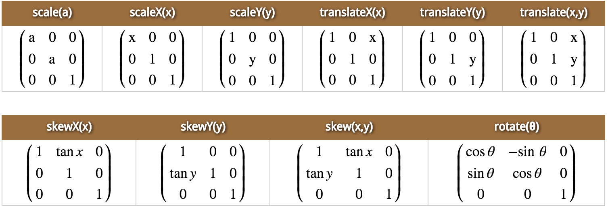

什么是空间?
一、齐次线性方程组
${ x }_{ 1 }\quad +\quad 5{ x }_{ 2\quad }-\quad 4{ x }_{ 3 }\quad =\quad 0\\ { x }_{ 1 }\quad +\quad 2{ x }_{ 2\quad }-\quad 4{ x }_{ 3 }\quad =\quad 0\\ 6{ x }_{ 1 }\quad +\quad { x }_{ 2 }\quad -\quad 8{ x }_{ 3 }\quad =\quad 0$
解齐次线性方程组
对该齐次线性方程组的增广矩阵做矩阵的初等变换
$\left[ A\quad O \right] \quad =\quad \begin{bmatrix} 3 & 5 & -4 & \quad 0 \\ 3 & \quad 2\quad & -4 & \quad 0 \\ 6 & \quad 1\quad & -8 & \quad 0 \end{bmatrix}\quad \\ =\quad \begin{bmatrix} 3 & 5 & -4 & \quad 0 \\ 0 & \quad 3\quad & 0 & \quad 0 \\ 0 & \quad 0\quad & 0 & \quad 0 \end{bmatrix}\quad =\quad \begin{bmatrix} 1 & 0 & -\cfrac { 4 }{ 3 } & \quad 0 \\ 0 & \quad 1\quad & 0 & \quad 0 \\ 0 & \quad 0\quad & 0 & \quad 0 \end{bmatrix}\quad $
回代
变换后的初等矩阵还原为方程组
${ x }_{ 1 }\quad -\quad \frac { 4 }{ 3 } { x }_{ 3 }\quad =\quad 0\\ { x }_{ 2 }\quad =\quad 0$
该齐次方程组的解就是在$\quad{ x }_{ 2 }=0\quad$的平面上画一条$\quad { x }_{ 1 }-\frac { 4 }{ 3 } { x }_{ 3 }=0\quad$的直线, 该线上所有的点都是方程组的解。
该齐次方程组解的向量表示
$\vec { x } \quad =\quad \begin{bmatrix} { x }_{ 1 } \\ { x }_{ 2 } \\ { x }_{ 3 } \end{bmatrix}\quad =\quad { x }_{ 3 }\begin{bmatrix} \frac { 4 }{ 3 } \\ 0 \\ 1 \end{bmatrix}\quad =\quad { x }_{ 3 }\vec { v } $
二、非齐次线性方程组
${ x }_{ 1 }\quad +\quad 5{ x }_{ 2\quad }-\quad 4{ x }_{ 3 }\quad =\quad 7\\ { x }_{ 1 }\quad +\quad 2{ x }_{ 2\quad }-\quad 4{ x }_{ 3 }\quad =\quad 1\\ 6{ x }_{ 1 }\quad +\quad { x }_{ 2 }\quad -\quad 8{ x }_{ 3 }\quad =\quad -4$
解非齐次线性方程组
对该非齐次线性方程组的增广矩阵做矩阵的初等变换
$\left[ A\quad O \right] \quad =\quad \begin{bmatrix} 3 & 5 & -4 & \quad 7 \\ 3 & \quad 2\quad & -4 & \quad 1 \\ 6 & \quad 1\quad & -8 & \quad -4 \end{bmatrix}\quad \\ =\quad \begin{bmatrix} 3 & 5 & -4 & \quad 7 \\ 0 & \quad 3\quad & 0 & \quad 6 \\ 0 & \quad 0\quad & 0 & \quad 0 \end{bmatrix}\quad =\quad \begin{bmatrix} 1 & 0 & -\cfrac { 4 }{ 3 } & \quad -1 \\ 0 & \quad 1\quad & 0 & \quad 2 \\ 0 & \quad 0\quad & 0 & \quad 0 \end{bmatrix}\quad $
回代
变换后的初等矩阵还原为方程组
${ x }_{ 1 }\quad -\quad \frac { 4 }{ 3 } { x }_{ 3 }\quad =\quad -1\\ { x }_{ 2 }\quad =\quad 2$
该非齐次方程组的解就是在$\quad { x }_{ 2 }=2\quad$的平面上画一条$\quad { x }_{ 1 }-\frac { 4 }{ 3 } { x }_{ 3 }=-1 \quad$的直线, 该线上所有的点都是方程组的解。
该非齐次方程组解的向量表示
$\vec { x }=\begin{bmatrix} { x }_{ 1 } \\ { x }_{ 2 } \\ { x }_{ 3 } \end{bmatrix}=\begin{bmatrix} { -1+\frac { 4 }{ 3 } { x }_{ 3 } } \\ 2 \\ { x }_{ 3 } \end{bmatrix}={ x }_{ 3 }\begin{bmatrix} \frac { 4 }{ 3 } \\ 0 \\ 1 \end{bmatrix}\quad +\quad \begin{bmatrix} -1 \\ 2 \\ 0 \end{bmatrix}={ x }_{ 3 }\vec { v } \quad +\quad \vec { p } $
结论:
1. 齐次方程组的解集经向量 $ \vec { p } $ 平移得到非齐次方程组的解集。
2. 齐次方程组的每个方程是满足 $ f\left( ax+by \right)=af\left( x \right)+bf\left( y \right) $ 的线性变换方程。
3. 非齐次方程组的每个方程是满足 $ f\left( x \right) =ax+b $ 的仿射变换方程。
4. m维的非齐次线性方程组可以转变为(m+1)维的齐次线性方程组。
三、非齐次线性方程组转变为齐次线性方程组
$\begin{cases} { x }_{ 1 }+5{ x }_{ 2 }-4{ x }_{ 3 }=7 \\ { x }_{ 1 }+2{ x }_{ 2 }-4{ x }_{ 3 }=1 \\ 6{ x }_{ 1 }+{ x }_{ 2 }-8{ x }_{ 3 }=-4 \end{cases}\Rightarrow \quad \begin{cases} { x }_{ 1 }+5{ x }_{ 2 }-4{ x }_{ 3 }\quad -\quad 7\bullet 1=0 \\ { x }_{ 1 }+2{ x }_{ 2 }-4{ x }_{ 3 }\quad -\quad 1\bullet 1=0 \\ 6{ x }_{ 1 }+{ x }_{ 2 }-8{ x }_{ 3 }\quad +\quad 4\bullet 1=0 \end{cases}$
m维的仿射变换可以由(m+1)维的线性变换实现。
非齐次线性方程组转变为齐次线性方程组的向量表示
$\vec { x } =\begin{bmatrix} { x }_{ 1 } \\ { x }_{ 2 } \\ { x }_{ 3 } \\ 1 \end{bmatrix},\quad A=\begin{bmatrix} { a }_{ 11 } & { a }_{ 12 } & { a }_{ 13 } & { a }_{ 14 } \\ { a }_{ 21 } & { a }_{ 22 } & { a }_{ 23 } & { a }_{ 24 } \\ { a }_{ 31 } & { a }_{ 32 } & { a }_{ 33 } & { a }_{ 34 } \\ 0 & 0 & 0 & 1 \end{bmatrix}$
四、线性变换的几何直观表示
- 一、变换前是直线的，变换后依然是直线。
- 二、直线比例保持不变。
- 三、变换前是原点的，变换后依然是原点。
- 四、以上三点均可通过$ f\left( ax+by \right)=af\left( x \right)+bf\left( y \right) $ 证明。
五、仿射变换的几何直观表示
- 一、变换前是直线的，变换后依然是直线。
- 二、直线比例保持不变。
- 三、以上三点均可通过$ f\left( x \right) =ax+b $ 证明。
七、css中transform二维形变方程组
- 一、位移: $\left( x,y \right) \Rightarrow \left( x+e,y+f \right) $
- 二、旋转: $\left( x,y \right) \Rightarrow \left( \cos { \theta \ast } x-\sin { \theta \ast y } ,\quad \cos { \theta \ast } y+\sin { \theta \ast x } \right) $
- 三、拉伸: $\left( x,y \right) \Rightarrow \left( ax,by \right) $
- 四、扑倒: $\left( x,y \right) \Rightarrow \left( x+\tan { \alpha \ast y } ,\quad y+\tan { \beta \ast x } \right) $
transform二维形变通用方程组
$\begin{cases} { x }^{ ' }\quad =\quad ax\quad +\quad cy\quad +\quad e \\ { y }^{ ' }\quad =\quad bx\quad +\quad dy\quad +\quad f \\ 1\quad =\quad 0x\quad +\quad 0y\quad +\quad 1 \end{cases}\\ \\ \begin{bmatrix} { x }^{ ' } \\ { y }^{ ' } \\ 1 \end{bmatrix}\quad =\quad \begin{bmatrix} a & c & e \\ b & d & f \\ 0 & 0 & 1 \end{bmatrix}\cdot \begin{bmatrix} { x } \\ { y } \\ 1 \end{bmatrix}\quad $
位移(translate)
$\begin{cases} { x }^{ ' }\quad =\quad 1x\quad +\quad 0y\quad +\quad e \\ { y }^{ ' }\quad =\quad 0x\quad +\quad 1y\quad +\quad f \\ 1\quad =\quad 0x\quad +\quad 0y\quad +\quad 1 \end{cases}\\ \\ \begin{bmatrix} { x }^{ ' } \\ { y }^{ ' } \\ 1 \end{bmatrix}\quad =\quad \begin{bmatrix} { x } \\ { y } \\ 1 \end{bmatrix}\quad \cdot \quad \begin{bmatrix} 1 & \quad 0\quad & e \\ 0 & 1 & f \\ 0 & 0 & 1 \end{bmatrix}$
transform: translate(e,f) 或 matrix(1,0,0,1,e,f);
旋转(rotate)
$\begin{cases} { x }^{ ' }\quad =\quad \cos { \theta } x\quad +\quad (-\sin { \theta } )y\quad +\quad 0 \\ { y }^{ ' }\quad =\quad \sin { \theta } x\quad +\quad \cos { \theta } y\quad +\quad 0 \\ 1\quad =\quad 0x\quad +\quad 0y\quad +\quad 1 \end{cases}\\ \\ \begin{bmatrix} { x }^{ ' } \\ { y }^{ ' } \\ 1 \end{bmatrix}\quad =\quad \begin{bmatrix} { x } \\ { y } \\ 1 \end{bmatrix}\quad \cdot \quad \begin{bmatrix} \cos { \theta } & \quad -\sin { \theta } \quad & 0 \\ \sin { \theta } & \cos { \theta } & 0 \\ 0 & 0 & 1 \end{bmatrix}$
transform: rotate($\theta$deg) 或 matrix(cos$\theta$,sin$\theta$,-sin$\theta$,cos$\theta$,0,0);
拉伸(scale)
$\begin{cases} { x }^{ ' }\quad =\quad ax\quad +\quad 0y\quad +\quad 0 \\ { y }^{ ' }\quad =\quad 0x\quad +\quad dy\quad +\quad 0 \\ 1\quad =\quad 0x\quad +\quad 0y\quad +\quad 1 \end{cases}\\ \\ \begin{bmatrix} { x }^{ ' } \\ { y }^{ ' } \\ 1 \end{bmatrix}\quad =\quad \begin{bmatrix} { x } \\ { y } \\ 1 \end{bmatrix}\quad \cdot \quad \begin{bmatrix} a & \quad 0\quad & 0 \\ 0 & b & 0 \\ 0 & 0 & 1 \end{bmatrix}$
transform: scale(a,b) 或 matrix(a, 0, 0, b, 0, 0);
镜像(symmetric)
$\begin{cases} { x }^{ ' }\quad =\quad -1x\quad +\quad 0y\quad +\quad 0 \\ { y }^{ ' }\quad =\quad 0x\quad +\quad 1y\quad +\quad 0 \\ 1\quad =\quad 0x\quad +\quad 0y\quad +\quad 1 \end{cases}\\ \\ \begin{bmatrix} { x }^{ ' } \\ { y }^{ ' } \\ 1 \end{bmatrix}\quad =\quad \begin{bmatrix} { x } \\ { y } \\ 1 \end{bmatrix}\quad \cdot \quad \begin{bmatrix} -1 & \quad 0\quad & 0 \\ 0 & 1 & 0 \\ 0 & 0 & 1 \end{bmatrix}$
transform: scale(-1,1) 或 matrix(-1, 0, 0, 1, 0, 0);
